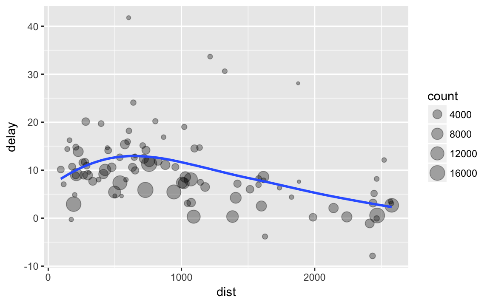
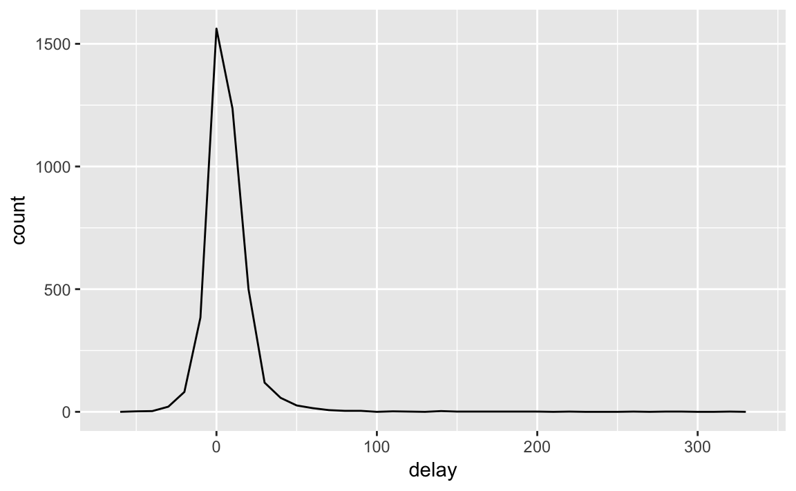
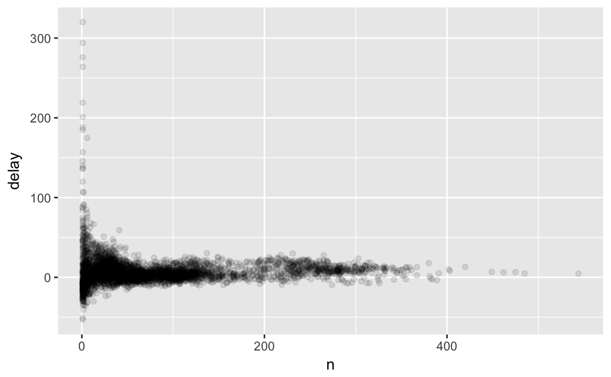
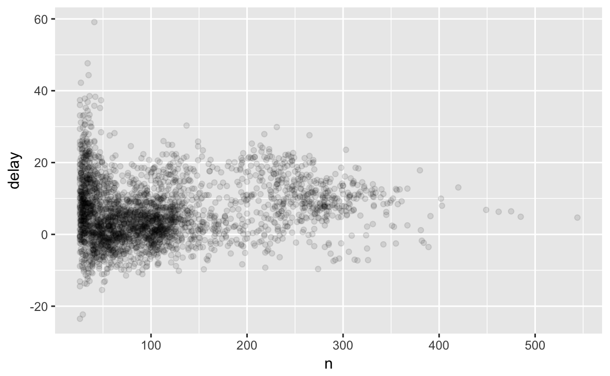
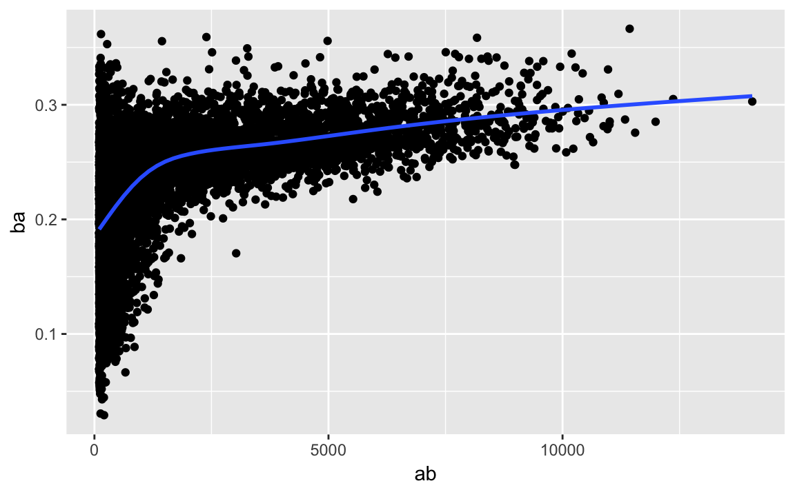

Chapter 13 Data transformation
13.1 Introduction
Visualisation is an important tool for insight generation, but it is rare that you get the data in exactly the right form you need. Often you’ll need to create some new variables or summaries, or maybe you just want to rename the variables or reorder the observations in order to make the data a little easier to work with.
데이터분석을 하다보면 주어진 데이터가 분석하기 편한 형태로 주어지는 경우는 많지 않다. 대부분의 경우는 분석하기 편한 형태로 가공하기 위해 새로운 변수의 생성 또는 요약, 변수명 재정의, 데이터 순서 조정 등의 전처리가 필요하다. 이번 절에서는 dplyr 패키지를 이용하여 데이터를 변환하는 방법에 대해 알아보자 한다.
In this chapter, you’ll learn how to transform your data using the dplyr package. We’ll illustrate the key ideas using data from the nycflights13 package, and use ggplot2 to help us understand the data.
13.1.1 Prerequisites
library(nycflights13)
library(tidyverse)13.1.2 dplyr basics
In this chapter you are going to learn the five key dplyr functions that allow you to solve the vast majority of your data manipulation challenges:
이번 절에서는 데이터 전처리 업무시 가장 많이 사용되는 dplyr 패키지의 5가지 동사 명령어에 대해 알아보자
- Pick observations by their values (
filter()). - Reorder the rows (
arrange()). - Pick variables by their names (
select()). - Create new variables with functions of existing variables (
mutate()). - Collapse many values down to a single summary (
summarise()).
These can all be used in conjunction with group_by() which changes the scope of each function from operating on the entire dataset to operating on it group-by-group. These six functions provide the verbs for a language of data manipulation.
All verbs work similarly:
The first argument is a data frame.
The subsequent arguments describe what to do with the data frame, using the variable names (without quotes).
The result is a new data frame.
Together these properties make it easy to chain together multiple simple steps to achieve a complex result.
Let’s dive in and see how these verbs work.
13.2 Filter rows with filter()
filter()allows you to subset observations based on their values. The first argument is the name of the data frame. The second and subsequent arguments are the expressions that filter the data frame. For example, we can select all flights on January 1st with:
filter()는 관측치 값을 기준으로 데이터를 subset
filter(flights, month == 1, day == 1)
#> # A tibble: 842 x 19
#> year month day dep_time sched_dep_time dep_delay arr_time
#> <int> <int> <int> <int> <int> <dbl> <int>
#> 1 2013 1 1 517 515 2. 830
#> 2 2013 1 1 533 529 4. 850
#> 3 2013 1 1 542 540 2. 923
#> 4 2013 1 1 544 545 -1. 1004
#> 5 2013 1 1 554 600 -6. 812
#> 6 2013 1 1 554 558 -4. 740
#> # ... with 836 more rows, and 12 more variables: sched_arr_time <int>,
#> # arr_delay <dbl>, carrier <chr>, flight <int>, tailnum <chr>,
#> # origin <chr>, dest <chr>, air_time <dbl>, distance <dbl>, hour <dbl>,
#> # minute <dbl>, time_hour <dttm>When you run that line of code, dplyr executes the filtering operation and returns a new data frame. dplyr functions never modify their inputs, so if you want to save the result, you’ll need to use the assignment operator,
<-:
결과를 저장하기 위해 변수에 assign 필요
jan1 <- filter(flights, month == 1, day == 1)R either prints out the results, or saves them to a variable. If you want to do both, you can wrap the assignment in parentheses:
출력과 assign을 동시에 하기 위해 ()로 묶는다.
(dec25 <- filter(flights, month == 12, day == 25))
#> # A tibble: 719 x 19
#> year month day dep_time sched_dep_time dep_delay arr_time
#> <int> <int> <int> <int> <int> <dbl> <int>
#> 1 2013 12 25 456 500 -4. 649
#> 2 2013 12 25 524 515 9. 805
#> 3 2013 12 25 542 540 2. 832
#> 4 2013 12 25 546 550 -4. 1022
#> 5 2013 12 25 556 600 -4. 730
#> 6 2013 12 25 557 600 -3. 743
#> # ... with 713 more rows, and 12 more variables: sched_arr_time <int>,
#> # arr_delay <dbl>, carrier <chr>, flight <int>, tailnum <chr>,
#> # origin <chr>, dest <chr>, air_time <dbl>, distance <dbl>, hour <dbl>,
#> # minute <dbl>, time_hour <dttm>13.2.1 Comparisons
To use filtering effectively, you have to know how to select the observations that you want using the comparison operators. R provides the standard suite:
>,>=,<,<=,!=(not equal), and==(equal).
filtering을 효과적으로 하기 위해서는 비교구문을 잘 활용할 필요
When you’re starting out with R, the easiest mistake to make is to use
=instead of==when testing for equality. When this happens you’ll get an informative error:
=와==구분
filter(flights, month = 1)
#> Error: `month` (`month = 1`) must not be named, do you need `==`?There’s another common problem you might encounter when using
==: floating point numbers. These results might surprise you!
floating-point number 사용시 approximation에 주의
sqrt(2) ^ 2 == 2
#> [1] FALSE
1/49 * 49 == 1
#> [1] FALSEComputers use finite precision arithmetic (they obviously can’t store an infinite number of digits!) so remember that every number you see is an approximation. Instead of relying on
==, usenear():
==보다 near() 사용
near(sqrt(2) ^ 2, 2)
#> [1] TRUE
near(1 / 49 * 49, 1)
#> [1] TRUE13.2.2 Logical operators
Multiple arguments to filter() are combined with “and”: every expression must be true in order for a row to be included in the output. For other types of combinations, you’ll need to use Boolean operators yourself: & is “and”, | is “or”, and ! is “not”. Figure 13.1 shows the complete set of Boolean operations.

Figure 13.1: Complete set of boolean operations. x is the left-hand circle, y is the right-hand circle, and the shaded region show which parts each operator selects.
The following code finds all flights that departed in November or December:
filter(flights, month == 11 | month == 12)The order of operations doesn’t work like English. You can’t write filter(flights, month == 11 | 12), which you might literally translate into “finds all flights that departed in November or December”. Instead it finds all months that equal 11 | 12, an expression that evaluates to TRUE. In a numeric context (like here), TRUE becomes one, so this finds all flights in January, not November or December. This is quite confusing!
A useful short-hand for this problem is x %in% y. This will select every row where x is one of the values in y. We could use it to rewrite the code above:
nov_dec <- filter(flights, month %in% c(11, 12))Sometimes you can simplify complicated subsetting by remembering De Morgan’s law: !(x & y) is the same as !x | !y, and !(x | y) is the same as !x & !y. For example, if you wanted to find flights that weren’t delayed (on arrival or departure) by more than two hours, you could use either of the following two filters:
filter(flights, !(arr_delay > 120 | dep_delay > 120))
filter(flights, arr_delay <= 120, dep_delay <= 120)As well as & and |, R also has && and ||. Don’t use them here! You’ll learn when you should use them in [conditional execution].
Whenever you start using complicated, multipart expressions in filter(), consider making them explicit variables instead. That makes it much easier to check your work. You’ll learn how to create new variables shortly.
13.2.3 Missing values
One important feature of R that can make comparison tricky are missing values, or NAs (“not availables”). NA represents an unknown value so missing values are “contagious”: almost any operation involving an unknown value will also be unknown.
NA > 5
#> [1] NA
10 == NA
#> [1] NA
NA + 10
#> [1] NA
NA / 2
#> [1] NAThe most confusing result is this one:
NA == NA
#> [1] NAIt’s easiest to understand why this is true with a bit more context:
# Let x be Mary's age. We don't know how old she is.
x <- NA
# Let y be John's age. We don't know how old he is.
y <- NA
# Are John and Mary the same age?
x == y
#> [1] NA
# We don't know!If you want to determine if a value is missing, use is.na():
is.na(x)
#> [1] TRUEfilter() only includes rows where the condition is TRUE; it excludes both FALSE and NA values. If you want to preserve missing values, ask for them explicitly:
df <- tibble(x = c(1, NA, 3))
filter(df, x > 1)
#> # A tibble: 1 x 1
#> x
#> <dbl>
#> 1 3.
filter(df, is.na(x) | x > 1)
#> # A tibble: 2 x 1
#> x
#> <dbl>
#> 1 NA
#> 2 3.13.2.4 Exercises
Find all flights that
- Had an arrival delay of two or more hours
- Flew to Houston (
IAHorHOU) - Were operated by United, American, or Delta
- Departed in summer (July, August, and September)
- Arrived more than two hours late, but didn’t leave late
- Were delayed by at least an hour, but made up over 30 minutes in flight
- Departed between midnight and 6am (inclusive)
Another useful dplyr filtering helper is
between(). What does it do? Can you use it to simplify the code needed to answer the previous challenges?How many flights have a missing
dep_time? What other variables are missing? What might these rows represent?Why is
NA ^ 0not missing? Why isNA | TRUEnot missing? Why isFALSE & NAnot missing? Can you figure out the general rule? (NA * 0is a tricky counterexample!)
13.3 Arrange rows with arrange()
arrange() works similarly to filter() except that instead of selecting rows, it changes their order. It takes a data frame and a set of column names (or more complicated expressions) to order by. If you provide more than one column name, each additional column will be used to break ties in the values of preceding columns:
arrange(flights, year, month, day)
#> # A tibble: 336,776 x 19
#> year month day dep_time sched_dep_time dep_delay arr_time
#> <int> <int> <int> <int> <int> <dbl> <int>
#> 1 2013 1 1 517 515 2. 830
#> 2 2013 1 1 533 529 4. 850
#> 3 2013 1 1 542 540 2. 923
#> 4 2013 1 1 544 545 -1. 1004
#> 5 2013 1 1 554 600 -6. 812
#> 6 2013 1 1 554 558 -4. 740
#> # ... with 3.368e+05 more rows, and 12 more variables:
#> # sched_arr_time <int>, arr_delay <dbl>, carrier <chr>, flight <int>,
#> # tailnum <chr>, origin <chr>, dest <chr>, air_time <dbl>,
#> # distance <dbl>, hour <dbl>, minute <dbl>, time_hour <dttm>Use desc() to re-order by a column in descending order:
arrange(flights, desc(arr_delay))
#> # A tibble: 336,776 x 19
#> year month day dep_time sched_dep_time dep_delay arr_time
#> <int> <int> <int> <int> <int> <dbl> <int>
#> 1 2013 1 9 641 900 1301. 1242
#> 2 2013 6 15 1432 1935 1137. 1607
#> 3 2013 1 10 1121 1635 1126. 1239
#> 4 2013 9 20 1139 1845 1014. 1457
#> 5 2013 7 22 845 1600 1005. 1044
#> 6 2013 4 10 1100 1900 960. 1342
#> # ... with 3.368e+05 more rows, and 12 more variables:
#> # sched_arr_time <int>, arr_delay <dbl>, carrier <chr>, flight <int>,
#> # tailnum <chr>, origin <chr>, dest <chr>, air_time <dbl>,
#> # distance <dbl>, hour <dbl>, minute <dbl>, time_hour <dttm>Missing values are always sorted at the end:
df <- tibble(x = c(5, 2, NA))
arrange(df, x)
#> # A tibble: 3 x 1
#> x
#> <dbl>
#> 1 2.
#> 2 5.
#> 3 NA
arrange(df, desc(x))
#> # A tibble: 3 x 1
#> x
#> <dbl>
#> 1 5.
#> 2 2.
#> 3 NA13.3.1 Exercises
How could you use
arrange()to sort all missing values to the start? (Hint: useis.na()).Sort
flightsto find the most delayed flights. Find the flights that left earliest.Sort
flightsto find the fastest flights.Which flights travelled the longest? Which travelled the shortest?
13.4 Select columns with select()
It’s not uncommon to get datasets with hundreds or even thousands of variables. In this case, the first challenge is often narrowing in on the variables you’re actually interested in. select() allows you to rapidly zoom in on a useful subset using operations based on the names of the variables.
select() is not terribly useful with the flights data because we only have 19 variables, but you can still get the general idea:
# Select columns by name
select(flights, year, month, day)
#> # A tibble: 336,776 x 3
#> year month day
#> <int> <int> <int>
#> 1 2013 1 1
#> 2 2013 1 1
#> 3 2013 1 1
#> 4 2013 1 1
#> 5 2013 1 1
#> 6 2013 1 1
#> # ... with 3.368e+05 more rows
# Select all columns between year and day (inclusive)
select(flights, year:day)
#> # A tibble: 336,776 x 3
#> year month day
#> <int> <int> <int>
#> 1 2013 1 1
#> 2 2013 1 1
#> 3 2013 1 1
#> 4 2013 1 1
#> 5 2013 1 1
#> 6 2013 1 1
#> # ... with 3.368e+05 more rows
# Select all columns except those from year to day (inclusive)
select(flights, -(year:day))
#> # A tibble: 336,776 x 16
#> dep_time sched_dep_time dep_delay arr_time sched_arr_time arr_delay
#> <int> <int> <dbl> <int> <int> <dbl>
#> 1 517 515 2. 830 819 11.
#> 2 533 529 4. 850 830 20.
#> 3 542 540 2. 923 850 33.
#> 4 544 545 -1. 1004 1022 -18.
#> 5 554 600 -6. 812 837 -25.
#> 6 554 558 -4. 740 728 12.
#> # ... with 3.368e+05 more rows, and 10 more variables: carrier <chr>,
#> # flight <int>, tailnum <chr>, origin <chr>, dest <chr>, air_time <dbl>,
#> # distance <dbl>, hour <dbl>, minute <dbl>, time_hour <dttm>There are a number of helper functions you can use within select():
starts_with("abc"): matches names that begin with “abc”.ends_with("xyz"): matches names that end with “xyz”.contains("ijk"): matches names that contain “ijk”.matches("(.)\\1"): selects variables that match a regular expression. This one matches any variables that contain repeated characters. You’ll learn more about regular expressions in [strings].num_range("x", 1:3)matchesx1,x2andx3.
See ?select for more details.
select() can be used to rename variables, but it’s rarely useful because it drops all of the variables not explicitly mentioned. Instead, use rename(), which is a variant of select() that keeps all the variables that aren’t explicitly mentioned:
rename(flights, tail_num = tailnum)
#> # A tibble: 336,776 x 19
#> year month day dep_time sched_dep_time dep_delay arr_time
#> <int> <int> <int> <int> <int> <dbl> <int>
#> 1 2013 1 1 517 515 2. 830
#> 2 2013 1 1 533 529 4. 850
#> 3 2013 1 1 542 540 2. 923
#> 4 2013 1 1 544 545 -1. 1004
#> 5 2013 1 1 554 600 -6. 812
#> 6 2013 1 1 554 558 -4. 740
#> # ... with 3.368e+05 more rows, and 12 more variables:
#> # sched_arr_time <int>, arr_delay <dbl>, carrier <chr>, flight <int>,
#> # tail_num <chr>, origin <chr>, dest <chr>, air_time <dbl>,
#> # distance <dbl>, hour <dbl>, minute <dbl>, time_hour <dttm>Another option is to use select() in conjunction with the everything() helper. This is useful if you have a handful of variables you’d like to move to the start of the data frame.
select(flights, time_hour, air_time, everything())
#> # A tibble: 336,776 x 19
#> time_hour air_time year month day dep_time sched_dep_time
#> <dttm> <dbl> <int> <int> <int> <int> <int>
#> 1 2013-01-01 05:00:00 227. 2013 1 1 517 515
#> 2 2013-01-01 05:00:00 227. 2013 1 1 533 529
#> 3 2013-01-01 05:00:00 160. 2013 1 1 542 540
#> 4 2013-01-01 05:00:00 183. 2013 1 1 544 545
#> 5 2013-01-01 06:00:00 116. 2013 1 1 554 600
#> 6 2013-01-01 05:00:00 150. 2013 1 1 554 558
#> # ... with 3.368e+05 more rows, and 12 more variables: dep_delay <dbl>,
#> # arr_time <int>, sched_arr_time <int>, arr_delay <dbl>, carrier <chr>,
#> # flight <int>, tailnum <chr>, origin <chr>, dest <chr>, distance <dbl>,
#> # hour <dbl>, minute <dbl>13.4.1 Exercises
Brainstorm as many ways as possible to select
dep_time,dep_delay,arr_time, andarr_delayfromflights.What happens if you include the name of a variable multiple times in a
select()call?What does the
one_of()function do? Why might it be helpful in conjunction with this vector?vars <- c("year", "month", "day", "dep_delay", "arr_delay")Does the result of running the following code surprise you? How do the select helpers deal with case by default? How can you change that default?
select(flights, contains("TIME"))
13.5 Add new variables with mutate()
Besides selecting sets of existing columns, it’s often useful to add new columns that are functions of existing columns. That’s the job of mutate().
mutate() always adds new columns at the end of your dataset so we’ll start by creating a narrower dataset so we can see the new variables. Remember that when you’re in RStudio, the easiest way to see all the columns is View().
flights_sml <- select(flights,
year:day,
ends_with("delay"),
distance,
air_time
)
mutate(flights_sml,
gain = arr_delay - dep_delay,
speed = distance / air_time * 60
)
#> # A tibble: 336,776 x 9
#> year month day dep_delay arr_delay distance air_time gain speed
#> <int> <int> <int> <dbl> <dbl> <dbl> <dbl> <dbl> <dbl>
#> 1 2013 1 1 2. 11. 1400. 227. 9. 370.
#> 2 2013 1 1 4. 20. 1416. 227. 16. 374.
#> 3 2013 1 1 2. 33. 1089. 160. 31. 408.
#> 4 2013 1 1 -1. -18. 1576. 183. -17. 517.
#> 5 2013 1 1 -6. -25. 762. 116. -19. 394.
#> 6 2013 1 1 -4. 12. 719. 150. 16. 288.
#> # ... with 3.368e+05 more rowsNote that you can refer to columns that you’ve just created:
mutate(flights_sml,
gain = arr_delay - dep_delay,
hours = air_time / 60,
gain_per_hour = gain / hours
)
#> # A tibble: 336,776 x 10
#> year month day dep_delay arr_delay distance air_time gain hours
#> <int> <int> <int> <dbl> <dbl> <dbl> <dbl> <dbl> <dbl>
#> 1 2013 1 1 2. 11. 1400. 227. 9. 3.78
#> 2 2013 1 1 4. 20. 1416. 227. 16. 3.78
#> 3 2013 1 1 2. 33. 1089. 160. 31. 2.67
#> 4 2013 1 1 -1. -18. 1576. 183. -17. 3.05
#> 5 2013 1 1 -6. -25. 762. 116. -19. 1.93
#> 6 2013 1 1 -4. 12. 719. 150. 16. 2.50
#> # ... with 3.368e+05 more rows, and 1 more variable: gain_per_hour <dbl>If you only want to keep the new variables, use transmute():
transmute(flights,
gain = arr_delay - dep_delay,
hours = air_time / 60,
gain_per_hour = gain / hours
)
#> # A tibble: 336,776 x 3
#> gain hours gain_per_hour
#> <dbl> <dbl> <dbl>
#> 1 9. 3.78 2.38
#> 2 16. 3.78 4.23
#> 3 31. 2.67 11.6
#> 4 -17. 3.05 -5.57
#> 5 -19. 1.93 -9.83
#> 6 16. 2.50 6.40
#> # ... with 3.368e+05 more rows13.5.1 Useful creation functions
There are many functions for creating new variables that you can use with mutate(). The key property is that the function must be vectorised: it must take a vector of values as input, return a vector with the same number of values as output. There’s no way to list every possible function that you might use, but here’s a selection of functions that are frequently useful:
Arithmetic operators:
+,-,*,/,^. These are all vectorised, using the so called “recycling rules”. If one parameter is shorter than the other, it will be automatically extended to be the same length. This is most useful when one of the arguments is a single number:air_time / 60,hours * 60 + minute, etc.Arithmetic operators are also useful in conjunction with the aggregate functions you’ll learn about later. For example,
x / sum(x)calculates the proportion of a total, andy - mean(y)computes the difference from the mean.Modular arithmetic:
%/%(integer division) and%%(remainder), wherex == y * (x %/% y) + (x %% y). Modular arithmetic is a handy tool because it allows you to break integers up into pieces. For example, in the flights dataset, you can computehourandminutefromdep_timewith:transmute(flights, dep_time, hour = dep_time %/% 100, minute = dep_time %% 100 ) #> # A tibble: 336,776 x 3 #> dep_time hour minute #> <int> <dbl> <dbl> #> 1 517 5. 17. #> 2 533 5. 33. #> 3 542 5. 42. #> 4 544 5. 44. #> 5 554 5. 54. #> 6 554 5. 54. #> # ... with 3.368e+05 more rowsLogs:
log(),log2(),log10(). Logarithms are an incredibly useful transformation for dealing with data that ranges across multiple orders of magnitude. They also convert multiplicative relationships to additive, a feature we’ll come back to in modelling.All else being equal, I recommend using
log2()because it’s easy to interpret: a difference of 1 on the log scale corresponds to doubling on the original scale and a difference of -1 corresponds to halving.Offsets:
lead()andlag()allow you to refer to leading or lagging values. This allows you to compute running differences (e.g.x - lag(x)) or find when values change (x != lag(x)). They are most useful in conjunction withgroup_by(), which you’ll learn about shortly.(x <- 1:10) #> [1] 1 2 3 4 5 6 7 8 9 10 lag(x) #> [1] NA 1 2 3 4 5 6 7 8 9 lead(x) #> [1] 2 3 4 5 6 7 8 9 10 NACumulative and rolling aggregates: R provides functions for running sums, products, mins and maxes:
cumsum(),cumprod(),cummin(),cummax(); and dplyr providescummean()for cumulative means. If you need rolling aggregates (i.e. a sum computed over a rolling window), try the RcppRoll package.x #> [1] 1 2 3 4 5 6 7 8 9 10 cumsum(x) #> [1] 1 3 6 10 15 21 28 36 45 55 cummean(x) #> [1] 1.0 1.5 2.0 2.5 3.0 3.5 4.0 4.5 5.0 5.5Logical comparisons,
<,<=,>,>=,!=, which you learned about earlier. If you’re doing a complex sequence of logical operations it’s often a good idea to store the interim values in new variables so you can check that each step is working as expected.Ranking: there are a number of ranking functions, but you should start with
min_rank(). It does the most usual type of ranking (e.g. 1st, 2nd, 2nd, 4th). The default gives smallest values the small ranks; usedesc(x)to give the largest values the smallest ranks.y <- c(1, 2, 2, NA, 3, 4) min_rank(y) #> [1] 1 2 2 NA 4 5 min_rank(desc(y)) #> [1] 5 3 3 NA 2 1If
min_rank()doesn’t do what you need, look at the variantsrow_number(),dense_rank(),percent_rank(),cume_dist(),ntile(). See their help pages for more details.row_number(y) #> [1] 1 2 3 NA 4 5 dense_rank(y) #> [1] 1 2 2 NA 3 4 percent_rank(y) #> [1] 0.00 0.25 0.25 NA 0.75 1.00 cume_dist(y) #> [1] 0.2 0.6 0.6 NA 0.8 1.0
13.5.2 Exercises
Currently
dep_timeandsched_dep_timeare convenient to look at, but hard to compute with because they’re not really continuous numbers. Convert them to a more convenient representation of number of minutes since midnight.Compare
air_timewitharr_time - dep_time. What do you expect to see? What do you see? What do you need to do to fix it?Compare
dep_time,sched_dep_time, anddep_delay. How would you expect those three numbers to be related?Find the 10 most delayed flights using a ranking function. How do you want to handle ties? Carefully read the documentation for
min_rank().What does
1:3 + 1:10return? Why?What trigonometric functions does R provide?
13.6 Grouped summaries with summarise()
The last key verb is summarise(). It collapses a data frame to a single row:
summarise(flights, delay = mean(dep_delay, na.rm = TRUE))
#> # A tibble: 1 x 1
#> delay
#> <dbl>
#> 1 12.6(We’ll come back to what that na.rm = TRUE means very shortly.)
summarise() is not terribly useful unless we pair it with group_by(). This changes the unit of analysis from the complete dataset to individual groups. Then, when you use the dplyr verbs on a grouped data frame they’ll be automatically applied “by group”. For example, if we applied exactly the same code to a data frame grouped by date, we get the average delay per date:
by_day <- group_by(flights, year, month, day)
summarise(by_day, delay = mean(dep_delay, na.rm = TRUE))
#> # A tibble: 365 x 4
#> # Groups: year, month [?]
#> year month day delay
#> <int> <int> <int> <dbl>
#> 1 2013 1 1 11.5
#> 2 2013 1 2 13.9
#> 3 2013 1 3 11.0
#> 4 2013 1 4 8.95
#> 5 2013 1 5 5.73
#> 6 2013 1 6 7.15
#> # ... with 359 more rowsTogether group_by() and summarise() provide one of the tools that you’ll use most commonly when working with dplyr: grouped summaries. But before we go any further with this, we need to introduce a powerful new idea: the pipe.
13.6.1 Combining multiple operations with the pipe
Imagine that we want to explore the relationship between the distance and average delay for each location. Using what you know about dplyr, you might write code like this:
by_dest <- group_by(flights, dest)
delay <- summarise(by_dest,
count = n(),
dist = mean(distance, na.rm = TRUE),
delay = mean(arr_delay, na.rm = TRUE)
)
delay <- filter(delay, count > 20, dest != "HNL")
# It looks like delays increase with distance up to ~750 miles
# and then decrease. Maybe as flights get longer there's more
# ability to make up delays in the air?
ggplot(data = delay, mapping = aes(x = dist, y = delay)) +
geom_point(aes(size = count), alpha = 1/3) +
geom_smooth(se = FALSE)
#> `geom_smooth()` using method = 'loess' and formula 'y ~ x'
There are three steps to prepare this data:
Group flights by destination.
Summarise to compute distance, average delay, and number of flights.
Filter to remove noisy points and Honolulu airport, which is almost twice as far away as the next closest airport.
This code is a little frustrating to write because we have to give each intermediate data frame a name, even though we don’t care about it. Naming things is hard, so this slows down our analysis.
There’s another way to tackle the same problem with the pipe, %>%:
delays <- flights %>%
group_by(dest) %>%
summarise(
count = n(),
dist = mean(distance, na.rm = TRUE),
delay = mean(arr_delay, na.rm = TRUE)
) %>%
filter(count > 20, dest != "HNL")This focuses on the transformations, not what’s being transformed, which makes the code easier to read. You can read it as a series of imperative statements: group, then summarise, then filter. As suggested by this reading, a good way to pronounce %>% when reading code is “then”.
Behind the scenes, x %>% f(y) turns into f(x, y), and x %>% f(y) %>% g(z) turns into g(f(x, y), z) and so on. You can use the pipe to rewrite multiple operations in a way that you can read left-to-right, top-to-bottom. We’ll use piping frequently from now on because it considerably improves the readability of code, and we’ll come back to it in more detail in [pipes].
Working with the pipe is one of the key criteria for belonging to the tidyverse. The only exception is ggplot2: it was written before the pipe was discovered. Unfortunately, the next iteration of ggplot2, ggvis, which does use the pipe, isn’t quite ready for prime time yet.
13.6.2 Missing values
You may have wondered about the na.rm argument we used above. What happens if we don’t set it?
flights %>%
group_by(year, month, day) %>%
summarise(mean = mean(dep_delay))
#> # A tibble: 365 x 4
#> # Groups: year, month [?]
#> year month day mean
#> <int> <int> <int> <dbl>
#> 1 2013 1 1 NA
#> 2 2013 1 2 NA
#> 3 2013 1 3 NA
#> 4 2013 1 4 NA
#> 5 2013 1 5 NA
#> 6 2013 1 6 NA
#> # ... with 359 more rowsWe get a lot of missing values! That’s because aggregation functions obey the usual rule of missing values: if there’s any missing value in the input, the output will be a missing value. Fortunately, all aggregation functions have an na.rm argument which removes the missing values prior to computation:
flights %>%
group_by(year, month, day) %>%
summarise(mean = mean(dep_delay, na.rm = TRUE))
#> # A tibble: 365 x 4
#> # Groups: year, month [?]
#> year month day mean
#> <int> <int> <int> <dbl>
#> 1 2013 1 1 11.5
#> 2 2013 1 2 13.9
#> 3 2013 1 3 11.0
#> 4 2013 1 4 8.95
#> 5 2013 1 5 5.73
#> 6 2013 1 6 7.15
#> # ... with 359 more rowsIn this case, where missing values represent cancelled flights, we could also tackle the problem by first removing the cancelled flights. We’ll save this dataset so we can reuse in the next few examples.
not_cancelled <- flights %>%
filter(!is.na(dep_delay), !is.na(arr_delay))
not_cancelled %>%
group_by(year, month, day) %>%
summarise(mean = mean(dep_delay))
#> # A tibble: 365 x 4
#> # Groups: year, month [?]
#> year month day mean
#> <int> <int> <int> <dbl>
#> 1 2013 1 1 11.4
#> 2 2013 1 2 13.7
#> 3 2013 1 3 10.9
#> 4 2013 1 4 8.97
#> 5 2013 1 5 5.73
#> 6 2013 1 6 7.15
#> # ... with 359 more rows13.6.3 Counts
Whenever you do any aggregation, it’s always a good idea to include either a count (n()), or a count of non-missing values (sum(!is.na(x))). That way you can check that you’re not drawing conclusions based on very small amounts of data. For example, let’s look at the planes (identified by their tail number) that have the highest average delays:
delays <- not_cancelled %>%
group_by(tailnum) %>%
summarise(
delay = mean(arr_delay)
)
ggplot(data = delays, mapping = aes(x = delay)) +
geom_freqpoly(binwidth = 10)
Wow, there are some planes that have an average delay of 5 hours (300 minutes)!
The story is actually a little more nuanced. We can get more insight if we draw a scatterplot of number of flights vs. average delay:
delays <- not_cancelled %>%
group_by(tailnum) %>%
summarise(
delay = mean(arr_delay, na.rm = TRUE),
n = n()
)
ggplot(data = delays, mapping = aes(x = n, y = delay)) +
geom_point(alpha = 1/10)
Not surprisingly, there is much greater variation in the average delay when there are few flights. The shape of this plot is very characteristic: whenever you plot a mean (or other summary) vs. group size, you’ll see that the variation decreases as the sample size increases.
When looking at this sort of plot, it’s often useful to filter out the groups with the smallest numbers of observations, so you can see more of the pattern and less of the extreme variation in the smallest groups. This is what the following code does, as well as showing you a handy pattern for integrating ggplot2 into dplyr flows. It’s a bit painful that you have to switch from %>% to +, but once you get the hang of it, it’s quite convenient.
delays %>%
filter(n > 25) %>%
ggplot(mapping = aes(x = n, y = delay)) +
geom_point(alpha = 1/10)
RStudio tip: a useful keyboard shortcut is Cmd/Ctrl + Shift + P. This resends the previously sent chunk from the editor to the console. This is very convenient when you’re (e.g.) exploring the value of n in the example above. You send the whole block once with Cmd/Ctrl + Enter, then you modify the value of n and press Cmd/Ctrl + Shift + P to resend the complete block.
There’s another common variation of this type of pattern. Let’s look at how the average performance of batters in baseball is related to the number of times they’re at bat. Here I use data from the Lahman package to compute the batting average (number of hits / number of attempts) of every major league baseball player.
When I plot the skill of the batter (measured by the batting average, ba) against the number of opportunities to hit the ball (measured by at bat, ab), you see two patterns:
As above, the variation in our aggregate decreases as we get more data points.
There’s a positive correlation between skill (
ba) and opportunities to hit the ball (ab). This is because teams control who gets to play, and obviously they’ll pick their best players.
# Convert to a tibble so it prints nicely
batting <- as_tibble(Lahman::Batting)
batters <- batting %>%
group_by(playerID) %>%
summarise(
ba = sum(H, na.rm = TRUE) / sum(AB, na.rm = TRUE),
ab = sum(AB, na.rm = TRUE)
)
batters %>%
filter(ab > 100) %>%
ggplot(mapping = aes(x = ab, y = ba)) +
geom_point() +
geom_smooth(se = FALSE)
#> `geom_smooth()` using method = 'gam' and formula 'y ~ s(x, bs = "cs")'
This also has important implications for ranking. If you naively sort on desc(ba), the people with the best batting averages are clearly lucky, not skilled:
batters %>%
arrange(desc(ba))
#> # A tibble: 18,915 x 3
#> playerID ba ab
#> <chr> <dbl> <int>
#> 1 abramge01 1. 1
#> 2 banisje01 1. 1
#> 3 bartocl01 1. 1
#> 4 bassdo01 1. 1
#> 5 berrijo01 1. 1
#> 6 birasst01 1. 2
#> # ... with 1.891e+04 more rowsYou can find a good explanation of this problem at http://varianceexplained.org/r/empirical_bayes_baseball/ and http://www.evanmiller.org/how-not-to-sort-by-average-rating.html.
13.6.4 Useful summary functions
Just using means, counts, and sum can get you a long way, but R provides many other useful summary functions:
Measures of location: we’ve used
mean(x), butmedian(x)is also useful. The mean is the sum divided by the length; the median is a value where 50% ofxis above it, and 50% is below it.It’s sometimes useful to combine aggregation with logical subsetting. We haven’t talked about this sort of subsetting yet, but you’ll learn more about it in [subsetting].
not_cancelled %>% group_by(year, month, day) %>% summarise( avg_delay1 = mean(arr_delay), avg_delay2 = mean(arr_delay[arr_delay > 0]) # the average positive delay ) #> # A tibble: 365 x 5 #> # Groups: year, month [?] #> year month day avg_delay1 avg_delay2 #> <int> <int> <int> <dbl> <dbl> #> 1 2013 1 1 12.7 32.5 #> 2 2013 1 2 12.7 32.0 #> 3 2013 1 3 5.73 27.7 #> 4 2013 1 4 -1.93 28.3 #> 5 2013 1 5 -1.53 22.6 #> 6 2013 1 6 4.24 24.4 #> # ... with 359 more rowsMeasures of spread:
sd(x),IQR(x),mad(x). The mean squared deviation, or standard deviation or sd for short, is the standard measure of spread. The interquartile rangeIQR()and median absolute deviationmad(x)are robust equivalents that may be more useful if you have outliers.# Why is distance to some destinations more variable than to others? not_cancelled %>% group_by(dest) %>% summarise(distance_sd = sd(distance)) %>% arrange(desc(distance_sd)) #> # A tibble: 104 x 2 #> dest distance_sd #> <chr> <dbl> #> 1 EGE 10.5 #> 2 SAN 10.4 #> 3 SFO 10.2 #> 4 HNL 10.0 #> 5 SEA 9.98 #> 6 LAS 9.91 #> # ... with 98 more rowsMeasures of rank:
min(x),quantile(x, 0.25),max(x). Quantiles are a generalisation of the median. For example,quantile(x, 0.25)will find a value ofxthat is greater than 25% of the values, and less than the remaining 75%.# When do the first and last flights leave each day? not_cancelled %>% group_by(year, month, day) %>% summarise( first = min(dep_time), last = max(dep_time) ) #> # A tibble: 365 x 5 #> # Groups: year, month [?] #> year month day first last #> <int> <int> <int> <dbl> <dbl> #> 1 2013 1 1 517. 2356. #> 2 2013 1 2 42. 2354. #> 3 2013 1 3 32. 2349. #> 4 2013 1 4 25. 2358. #> 5 2013 1 5 14. 2357. #> 6 2013 1 6 16. 2355. #> # ... with 359 more rowsMeasures of position:
first(x),nth(x, 2),last(x). These work similarly tox[1],x[2], andx[length(x)]but let you set a default value if that position does not exist (i.e. you’re trying to get the 3rd element from a group that only has two elements). For example, we can find the first and last departure for each day:not_cancelled %>% group_by(year, month, day) %>% summarise( first_dep = first(dep_time), last_dep = last(dep_time) ) #> # A tibble: 365 x 5 #> # Groups: year, month [?] #> year month day first_dep last_dep #> <int> <int> <int> <int> <int> #> 1 2013 1 1 517 2356 #> 2 2013 1 2 42 2354 #> 3 2013 1 3 32 2349 #> 4 2013 1 4 25 2358 #> 5 2013 1 5 14 2357 #> 6 2013 1 6 16 2355 #> # ... with 359 more rowsThese functions are complementary to filtering on ranks. Filtering gives you all variables, with each observation in a separate row:
not_cancelled %>% group_by(year, month, day) %>% mutate(r = min_rank(desc(dep_time))) %>% filter(r %in% range(r)) #> # A tibble: 770 x 20 #> # Groups: year, month, day [365] #> year month day dep_time sched_dep_time dep_delay arr_time #> <int> <int> <int> <int> <int> <dbl> <int> #> 1 2013 1 1 517 515 2. 830 #> 2 2013 1 1 2356 2359 -3. 425 #> 3 2013 1 2 42 2359 43. 518 #> 4 2013 1 2 2354 2359 -5. 413 #> 5 2013 1 3 32 2359 33. 504 #> 6 2013 1 3 2349 2359 -10. 434 #> # ... with 764 more rows, and 13 more variables: sched_arr_time <int>, #> # arr_delay <dbl>, carrier <chr>, flight <int>, tailnum <chr>, #> # origin <chr>, dest <chr>, air_time <dbl>, distance <dbl>, hour <dbl>, #> # minute <dbl>, time_hour <dttm>, r <int>Counts: You’ve seen
n(), which takes no arguments, and returns the size of the current group. To count the number of non-missing values, usesum(!is.na(x)). To count the number of distinct (unique) values, usen_distinct(x).# Which destinations have the most carriers? not_cancelled %>% group_by(dest) %>% summarise(carriers = n_distinct(carrier)) %>% arrange(desc(carriers)) #> # A tibble: 104 x 2 #> dest carriers #> <chr> <int> #> 1 ATL 7 #> 2 BOS 7 #> 3 CLT 7 #> 4 ORD 7 #> 5 TPA 7 #> 6 AUS 6 #> # ... with 98 more rowsCounts are so useful that dplyr provides a simple helper if all you want is a count:
not_cancelled %>% count(dest) #> # A tibble: 104 x 2 #> dest n #> <chr> <int> #> 1 ABQ 254 #> 2 ACK 264 #> 3 ALB 418 #> 4 ANC 8 #> 5 ATL 16837 #> 6 AUS 2411 #> # ... with 98 more rowsYou can optionally provide a weight variable. For example, you could use this to “count” (sum) the total number of miles a plane flew:
not_cancelled %>% count(tailnum, wt = distance) #> # A tibble: 4,037 x 2 #> tailnum n #> <chr> <dbl> #> 1 D942DN 3418. #> 2 N0EGMQ 239143. #> 3 N10156 109664. #> 4 N102UW 25722. #> 5 N103US 24619. #> 6 N104UW 24616. #> # ... with 4,031 more rowsCounts and proportions of logical values:
sum(x > 10),mean(y == 0). When used with numeric functions,TRUEis converted to 1 andFALSEto 0. This makessum()andmean()very useful:sum(x)gives the number ofTRUEs inx, andmean(x)gives the proportion.# How many flights left before 5am? (these usually indicate delayed # flights from the previous day) not_cancelled %>% group_by(year, month, day) %>% summarise(n_early = sum(dep_time < 500)) #> # A tibble: 365 x 4 #> # Groups: year, month [?] #> year month day n_early #> <int> <int> <int> <int> #> 1 2013 1 1 0 #> 2 2013 1 2 3 #> 3 2013 1 3 4 #> 4 2013 1 4 3 #> 5 2013 1 5 3 #> 6 2013 1 6 2 #> # ... with 359 more rows # What proportion of flights are delayed by more than an hour? not_cancelled %>% group_by(year, month, day) %>% summarise(hour_perc = mean(arr_delay > 60)) #> # A tibble: 365 x 4 #> # Groups: year, month [?] #> year month day hour_perc #> <int> <int> <int> <dbl> #> 1 2013 1 1 0.0722 #> 2 2013 1 2 0.0851 #> 3 2013 1 3 0.0567 #> 4 2013 1 4 0.0396 #> 5 2013 1 5 0.0349 #> 6 2013 1 6 0.0470 #> # ... with 359 more rows
13.6.5 Grouping by multiple variables
When you group by multiple variables, each summary peels off one level of the grouping. That makes it easy to progressively roll up a dataset:
daily <- group_by(flights, year, month, day)
(per_day <- summarise(daily, flights = n()))
#> # A tibble: 365 x 4
#> # Groups: year, month [?]
#> year month day flights
#> <int> <int> <int> <int>
#> 1 2013 1 1 842
#> 2 2013 1 2 943
#> 3 2013 1 3 914
#> 4 2013 1 4 915
#> 5 2013 1 5 720
#> 6 2013 1 6 832
#> # ... with 359 more rows
(per_month <- summarise(per_day, flights = sum(flights)))
#> # A tibble: 12 x 3
#> # Groups: year [?]
#> year month flights
#> <int> <int> <int>
#> 1 2013 1 27004
#> 2 2013 2 24951
#> 3 2013 3 28834
#> 4 2013 4 28330
#> 5 2013 5 28796
#> 6 2013 6 28243
#> # ... with 6 more rows
(per_year <- summarise(per_month, flights = sum(flights)))
#> # A tibble: 1 x 2
#> year flights
#> <int> <int>
#> 1 2013 336776Be careful when progressively rolling up summaries: it’s OK for sums and counts, but you need to think about weighting means and variances, and it’s not possible to do it exactly for rank-based statistics like the median. In other words, the sum of groupwise sums is the overall sum, but the median of groupwise medians is not the overall median.
13.6.6 Ungrouping
If you need to remove grouping, and return to operations on ungrouped data, use ungroup().
daily %>%
ungroup() %>% # no longer grouped by date
summarise(flights = n()) # all flights
#> # A tibble: 1 x 1
#> flights
#> <int>
#> 1 33677613.6.7 Exercises
Brainstorm at least 5 different ways to assess the typical delay characteristics of a group of flights. Consider the following scenarios:
A flight is 15 minutes early 50% of the time, and 15 minutes late 50% of the time.
A flight is always 10 minutes late.
A flight is 30 minutes early 50% of the time, and 30 minutes late 50% of the time.
99% of the time a flight is on time. 1% of the time it’s 2 hours late.
Which is more important: arrival delay or departure delay?
Come up with another approach that will give you the same output as
not_cancelled %>% count(dest)andnot_cancelled %>% count(tailnum, wt = distance)(without usingcount()).Our definition of cancelled flights (
is.na(dep_delay) | is.na(arr_delay)) is slightly suboptimal. Why? Which is the most important column?Look at the number of cancelled flights per day. Is there a pattern? Is the proportion of cancelled flights related to the average delay?
Which carrier has the worst delays? Challenge: can you disentangle the effects of bad airports vs. bad carriers? Why/why not? (Hint: think about
flights %>% group_by(carrier, dest) %>% summarise(n()))What does the
sortargument tocount()do. When might you use it?
13.7 Grouped mutates (and filters)
Grouping is most useful in conjunction with summarise(), but you can also do convenient operations with mutate() and filter():
Find the worst members of each group:
flights_sml %>% group_by(year, month, day) %>% filter(rank(desc(arr_delay)) < 10) #> # A tibble: 3,306 x 7 #> # Groups: year, month, day [365] #> year month day dep_delay arr_delay distance air_time #> <int> <int> <int> <dbl> <dbl> <dbl> <dbl> #> 1 2013 1 1 853. 851. 184. 41. #> 2 2013 1 1 290. 338. 1134. 213. #> 3 2013 1 1 260. 263. 266. 46. #> 4 2013 1 1 157. 174. 213. 60. #> 5 2013 1 1 216. 222. 708. 121. #> 6 2013 1 1 255. 250. 589. 115. #> # ... with 3,300 more rowsFind all groups bigger than a threshold:
popular_dests <- flights %>% group_by(dest) %>% filter(n() > 365) popular_dests #> # A tibble: 332,577 x 19 #> # Groups: dest [77] #> year month day dep_time sched_dep_time dep_delay arr_time #> <int> <int> <int> <int> <int> <dbl> <int> #> 1 2013 1 1 517 515 2. 830 #> 2 2013 1 1 533 529 4. 850 #> 3 2013 1 1 542 540 2. 923 #> 4 2013 1 1 544 545 -1. 1004 #> 5 2013 1 1 554 600 -6. 812 #> 6 2013 1 1 554 558 -4. 740 #> # ... with 3.326e+05 more rows, and 12 more variables: #> # sched_arr_time <int>, arr_delay <dbl>, carrier <chr>, flight <int>, #> # tailnum <chr>, origin <chr>, dest <chr>, air_time <dbl>, #> # distance <dbl>, hour <dbl>, minute <dbl>, time_hour <dttm>Standardise to compute per group metrics:
popular_dests %>% filter(arr_delay > 0) %>% mutate(prop_delay = arr_delay / sum(arr_delay)) %>% select(year:day, dest, arr_delay, prop_delay) #> # A tibble: 131,106 x 6 #> # Groups: dest [77] #> year month day dest arr_delay prop_delay #> <int> <int> <int> <chr> <dbl> <dbl> #> 1 2013 1 1 IAH 11. 0.000111 #> 2 2013 1 1 IAH 20. 0.000201 #> 3 2013 1 1 MIA 33. 0.000235 #> 4 2013 1 1 ORD 12. 0.0000424 #> 5 2013 1 1 FLL 19. 0.0000938 #> 6 2013 1 1 ORD 8. 0.0000283 #> # ... with 1.311e+05 more rows
A grouped filter is a grouped mutate followed by an ungrouped filter. I generally avoid them except for quick and dirty manipulations: otherwise it’s hard to check that you’ve done the manipulation correctly.
Functions that work most naturally in grouped mutates and filters are known as window functions (vs. the summary functions used for summaries). You can learn more about useful window functions in the corresponding vignette: vignette("window-functions").
13.7.1 Exercises
Refer back to the lists of useful mutate and filtering functions. Describe how each operation changes when you combine it with grouping.
Which plane (
tailnum) has the worst on-time record?What time of day should you fly if you want to avoid delays as much as possible?
For each destination, compute the total minutes of delay. For each, flight, compute the proportion of the total delay for its destination.
Delays are typically temporally correlated: even once the problem that caused the initial delay has been resolved, later flights are delayed to allow earlier flights to leave. Using
lag()explore how the delay of a flight is related to the delay of the immediately preceding flight.Look at each destination. Can you find flights that are suspiciously fast? (i.e. flights that represent a potential data entry error). Compute the air time a flight relative to the shortest flight to that destination. Which flights were most delayed in the air?
Find all destinations that are flown by at least two carriers. Use that information to rank the carriers.
For each plane, count the number of flights before the first delay of greater than 1 hour.